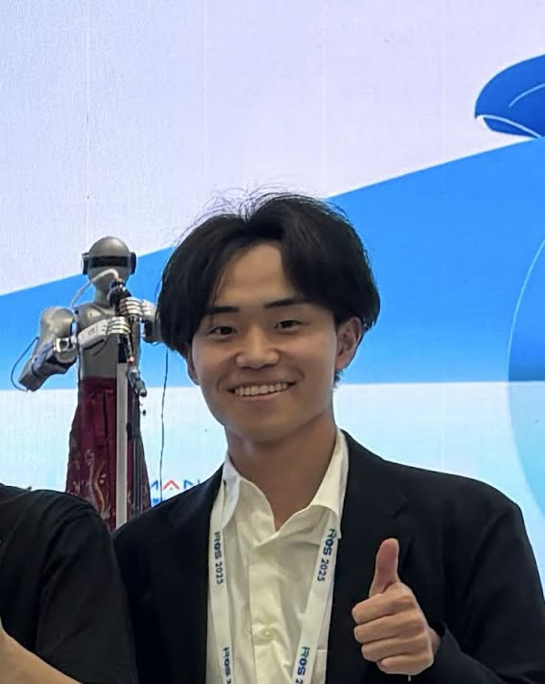

Learning to Selectively Push, Group, and Grasp for Multi-Object Delivery Using Diffusion Policies
Takahiro Yonemaru, Weiwei Wan, Tatsuki Nishimura, Kensuke Harada
IEEE Access, vol. 14, pp. 96698-96707, 2026
[Paper] [arXiv] [Video]
Website template: Academic Portfolio by Nicolás Meseguer, licensed under CC BY-SA 4.0.